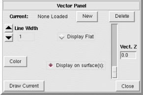

NVIZ Reference Manual
CONTENTS
Vector Lines Panel
The Vector Lines panel controls how vectors are displayed.
-

OPTIONS
- Current:
- Shows the name(s) of all the loaded vectors. You can use this menu to
select a new current vector.
- New
- Loads a new vector map.
- Delete
- Deletes (unload) the current vector.
- Line Width
- Sets the width (in pixels) of the current vector.
- Color
- Sets the color of the current vector.
You can display a vector flat at a specified elevation or drape it over a
surface(s) at a specified height.
Use the Vect. Z scale to set the flat elevation or the drape
height above the surface(s).
- Display Flat
- Draws the current vector on a flat plane at the elevation set by
the Vect. Z scale.
- Display on surface(s)
- Draws the current vector draped over the selected surface(s) at the
height set by the
Vect. Z scale.
A list of available surfaces appears directly below Display on
surface(s). Use this list to select the surfaces for draping
the vectors over.
For display purposes, it is better to set the height slightly above the
surface. If the height is set at zero, portions of the vector may disappear
into the surface(s).
- Vect. Z
- Sets either the flat elevation or the drape height above the surface(s)
(depending on which option is selected).
- Draw Current
- Draws the current vector map.
- Close
- Closes the Vector Lines panel.